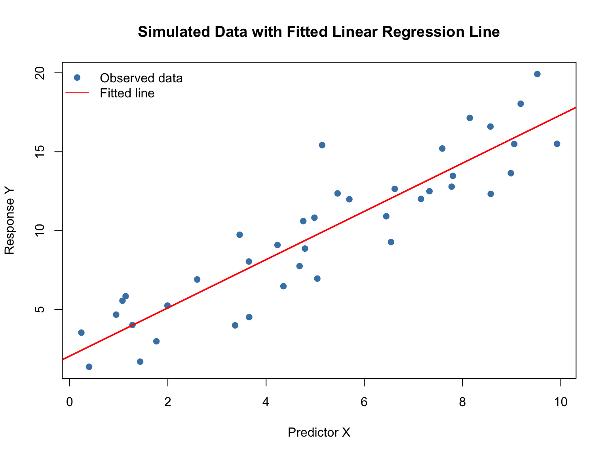
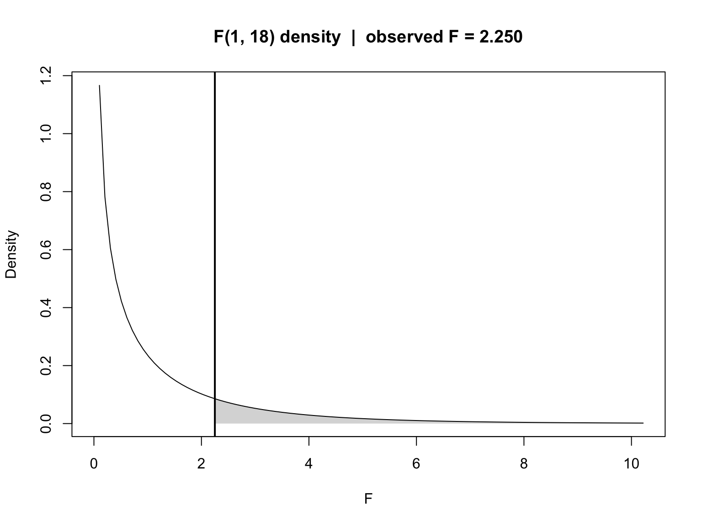
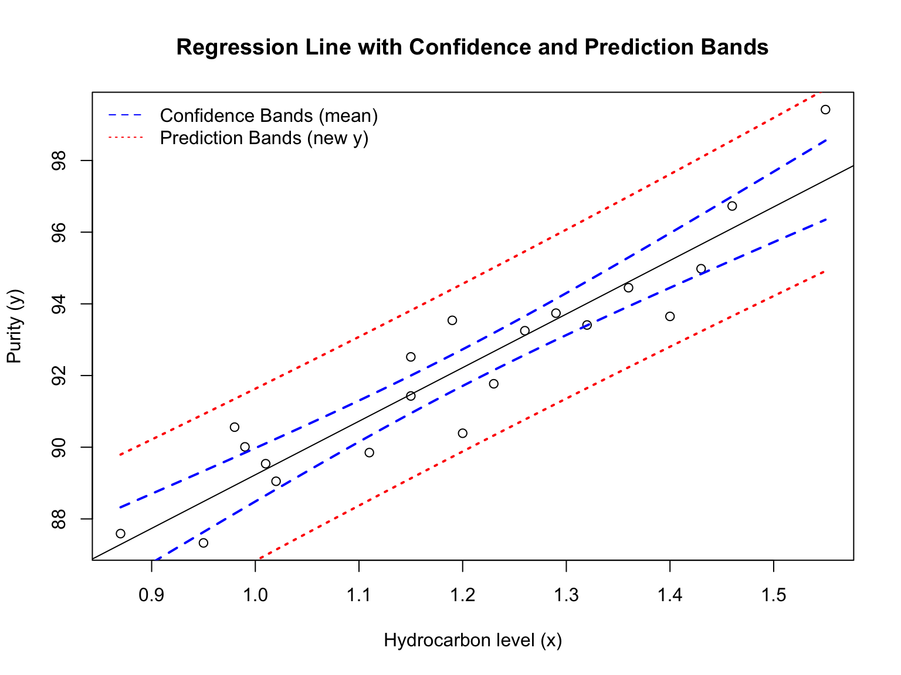
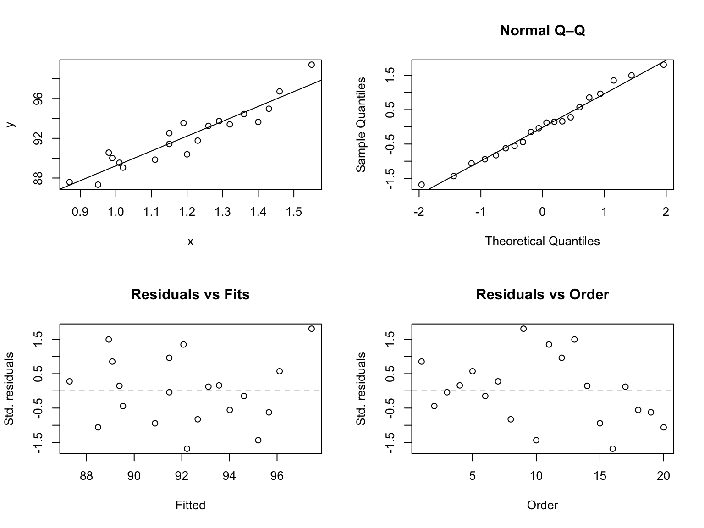

Code
require("knitr")
knitr::opts_chunk$set(
comment = "#",
fig.width = 8,
fig.height = 6,
cache = TRUE
)
set.seed(47)A Simulation Illustration with R
require("knitr")
knitr::opts_chunk$set(
comment = "#",
fig.width = 8,
fig.height = 6,
cache = TRUE
)
set.seed(47)To make the simple linear regression model concrete, let’s first visualize a simulated dataset that follows \[ Y_i = \beta_0 + \beta_1 X_i + \varepsilon_i, \qquad \varepsilon_i \sim \mathcal N(0, \sigma^2). \]
Here, \(\beta_0\) is the intercept, \(\beta_1\) is the slope, and \(\varepsilon_i\) represents random noise.
set.seed(2025)
n <- 40
beta0 <- 2; beta1 <- 1.5; sigma <- 2
x <- runif(n, 0, 10)
y <- beta0 + beta1 * x + rnorm(n, 0, sigma)
dat <- data.frame(x, y)
fit <- lm(y ~ x, data = dat)
plot(x, y, pch = 19, col = "steelblue",
xlab = "Predictor X", ylab = "Response Y",
main = "Simulated Data with Fitted Linear Regression Line")
abline(fit, col = "red", lwd = 2)
legend("topleft", legend = c("Observed data", "Fitted line"),
pch = c(19, NA), lty = c(NA, 1), col = c("steelblue", "red"), bty = "n")
The scatterplot shows data points scattered around a line — the red line is the fitted regression model.
Goal: Find \(\hat\beta_0\) and \(\hat\beta_1\) that minimize \[ \mathrm{SSE} = \sum_{i=1}^n (y_i - \hat\beta_0 - \hat\beta_1 x_i)^2. \]
Solutions: \[ \hat\beta_1 = \frac{\sum_i (x_i - \bar x)(y_i - \bar y)}{\sum_i (x_i - \bar x)^2} = \frac{S_{xy}}{S_{xx}}, \qquad \hat\beta_0 = \bar y - \hat\beta_1\,\bar x. \]
Here \[ S_{xy} = \sum_i (x_i - \bar x)(y_i - \bar y), \qquad S_{xx} = \sum_i (x_i - \bar x)^2. \]
Shortcut (computational) formulas: \[ S_{xy} = \sum_i x_i y_i - n\,\bar x\,\bar y, \qquad S_{xx} = \sum_i x_i^2 - n\,\bar x^2. \]
Interpretation:
- \(\hat\beta_1\) measures the estimated change in \(Y\) for each unit increase in \(X\).
- \(\hat\beta_0\) represents the fitted value of \(Y\) when \(X=0\).
Let \(\hat y_i = \hat\beta_0 + \hat\beta_1 x_i\) and \(e_i = y_i - \hat y_i\).
| Symbol | Definition | Computing Formula (in terms of \(S_{xx}, S_{xy}\), etc.) |
|---|---|---|
| SST | Total Sum of Squares | \(\displaystyle \sum_i (y_i - \bar y)^2 = S_{yy} = \sum_i y_i^2 - n\,\bar y^2\) |
| SSR | Regression Sum of Squares | \(\displaystyle \sum_i (\hat y_i - \bar y)^2 = \hat\beta_1^2 S_{xx} = \frac{S_{xy}^2}{S_{xx}}\) |
| SSE | Error (Residual) Sum of Squares | \(\displaystyle \sum_i (y_i - \hat y_i)^2 = S_{yy} - \frac{S_{xy}^2}{S_{xx}}\) |
Identity: \[ \mathrm{SST} = \mathrm{SSR} + \mathrm{SSE}. \]
Here, \[ S_{xx} = \sum_i (x_i - \bar x)^2 = \sum_i x_i^2 - n\bar x^2, \qquad S_{yy} = \sum_i (y_i - \bar y)^2 = \sum_i y_i^2 - n\bar y^2, \qquad S_{xy} = \sum_i (x_i - \bar x)(y_i - \bar y) = \sum_i x_i y_i - n\bar x \bar y. \]
Measures the proportion of total variation in \(Y\) explained by \(X\): \[ R^2 = \frac{\mathrm{SSR}}{\mathrm{SST}} = 1 - \frac{\mathrm{SSE}}{\mathrm{SST}}. \]
Interpretation:
Tests whether \(X\) is linearly related to \(Y\).
Hypotheses: \[ H_0: \beta_1 = 0 \quad \text{vs.} \quad H_A: \beta_1 \ne 0. \]
Test Statistic: \[ F = \frac{\text{MSR}}{\text{MSE}} = \frac{\text{SSR}/1}{\text{SSE}/(n-2)} \sim F_{1,n-2}\quad (H_0). \]
p-value approach for observe \(F^{\mathrm{obs}}\):
Given the observed statistic (F^{}) with ((1,,n-2)) df, \[ p-\text{value} \;=\; \Pr\!\big(F_{1,\,n-2} \ge F^{\text{obs}}\big) \;=\; \mathrm{pf}\!\big(F^{\text{obs}},\,1,\,n-2,\ \text{lower.tail}= \mathrm{FALSE}\big). \]
# -- Inputs (provide these from your analysis context) -------------------------
# n <- ... # sample size
# SSR <- ... # regression sum of squares
# SSE <- ... # error sum of squares
n <- 20
SSR <- 5
SSE <- 40
df1 <- 1
df2 <- n - 2
Fobs <- (SSR/df1) / (SSE/df2) # observed F
pval <- pf(Fobs, df1 = df1, df2 = df2, lower.tail = FALSE)
pval# [1] 0.1509505# -- Plot F density and shade the p-value tail (with proper annotations) -------
xmax <- max(qf(0.995, df1, df2), Fobs * 1.2) # extra space for labels
peak <- max(df(seq(0, xmax, length.out = 500), df1, df2))
# Density curve
curve(df(x, df1, df2), from = 0, to = xmax,
xlab = "F", ylab = "Density",
main = sprintf("F(%d, %d) density | observed F = %.3f", df1, df2, Fobs))
# Shade right tail (p-value region)
xs <- seq(Fobs, xmax, length.out = 300)
ys <- df(xs, df1, df2)
polygon(c(Fobs, xs, xmax), c(0, ys, 0),
col = rgb(0, 0, 0, 0.18), border = NA)
# Vertical line at Fobs (optional visual aid)
abline(v = Fobs, lwd = 2)
# ---- Annotation for F^obs pointing to the x-axis value (Fobs, 0) -------------
x_txt_F <- Fobs + 0.06 * xmax
y_txt_F <- 0.45 * peak
arrows(x0 = x_txt_F, y0 = y_txt_F, x1 = Fobs, y1 = 0,
length = 0.08, lwd = 1.5)
text(x_txt_F, y_txt_F,
labels = bquote(F^{obs} == .(format(Fobs, digits = 3))),
pos = 4)
# ---- Annotation for p-value pointing into the shaded tail --------------------
x_tip_p <- (Fobs + xmax) / 1.7
y_tip_p <- df(x_tip_p, df1, df2)
x_txt_p <- Fobs + 0.08 * xmax
y_txt_p <- 0.80 * peak
arrows(x0 = x_txt_p, y0 = y_txt_p, x1 = x_tip_p, y1 = y_tip_p,
length = 0.08, lwd = 1.5)
text(x_txt_p, y_txt_p,
labels = bquote(p == .(format(pval, digits = 4, scientific = TRUE))),
pos = 4)
Equivalent to the \(F\)-test in simple regression since \(t^2 = F\).
Formula: \[ t = \frac{\hat\beta_1}{\operatorname{SE}(\hat\beta_1)}, \qquad \operatorname{SE}(\hat\beta_1) = \sqrt{\frac{\hat\sigma^2}{\sum_i (x_i - \bar x)^2}}, \qquad \hat\sigma^2 = \frac{\mathrm{SSE}}{n-2}. \]
Distribution: \[ t \sim t_{n-2}\quad (H_0:\beta_1=0). \]
Predicted mean response: \[ \hat y(x_0) = \hat\beta_0 + \hat\beta_1 x_0. \]
95% Confidence interval for mean response: \[ \hat y(x_0) \pm t_{1-\alpha/2,,n-2}, \hat\sigma,\sqrt{\frac{1}{n} + \frac{(x_0 - \bar x)^2}{\sum_i (x_i - \bar x)^2}}. \]
95% Prediction interval for a new observation: \[ \hat y(x_0) \pm t_{1-\alpha/2,,n-2}, \hat\sigma,\sqrt{1 + \frac{1}{n} + \frac{(x_0 - \bar x)^2}{\sum_i (x_i - \bar x)^2}}. \]
Summary Cheat Sheet
| Concept | Key Formula |
|---|---|
| Model | \(Y_i = \beta_0 + \beta_1 X_i + \varepsilon_i\) |
| LS Estimates | \(\hat\beta_1 = S_{xy}/S_{xx}\), \(\hat\beta_0 = \bar y - \hat\beta_1\bar x\) |
| Decomposition | \(\mathrm{SST} = \mathrm{SSR} + \mathrm{SSE}\) |
| \(R^2\) | \(R^2 = 1 - \mathrm{SSE}/\mathrm{SST}\) |
| \(F\)-test | \(F = (\mathrm{SSR}/1)/(\mathrm{SSE}/(n-2))\) |
| \(t\)-test | \(t = \hat\beta_1 / \operatorname{SE}(\hat\beta_1)\) |
| Prediction | \(\hat y(x_0) = \hat\beta_0 + \hat\beta_1 x_0\) |
We model oxygen purity \(y\) as a function of hydrocarbon level \(x\) and report both mean response and prediction uncertainty.
x <- c(0.99, 1.02, 1.15, 1.29, 1.46, 1.36, 0.87, 1.23, 1.55, 1.40, 1.19,
1.15, 0.98, 1.01, 1.11, 1.20, 1.26, 1.32, 1.43, 0.95)
y <- c(90.01, 89.05, 91.43, 93.74, 96.73, 94.45, 87.59, 91.77, 99.42, 93.65,
93.54, 92.52, 90.56, 89.54, 89.85, 90.39, 93.25, 93.41, 94.98, 87.33)
n <- length(x); n# [1] 20purity.data <- data.frame(x = x, y = y)
head(purity.data)fit <- lm(y ~ x, data = purity.data)
summary(fit)#
# Call:
# lm(formula = y ~ x, data = purity.data)
#
# Residuals:
# Min 1Q Median 3Q Max
# -1.83029 -0.73334 0.04497 0.69969 1.96809
#
# Coefficients:
# Estimate Std. Error t value Pr(>|t|)
# (Intercept) 74.283 1.593 46.62 < 2e-16 ***
# x 14.947 1.317 11.35 1.23e-09 ***
# ---
# Signif. codes: 0 '***' 0.001 '**' 0.01 '*' 0.05 '.' 0.1 ' ' 1
#
# Residual standard error: 1.087 on 18 degrees of freedom
# Multiple R-squared: 0.8774, Adjusted R-squared: 0.8706
# F-statistic: 128.9 on 1 and 18 DF, p-value: 1.227e-09Interpretation. The slope’s sign gives the direction of association; its \(t\) test (or \(F\) with 1 df) assesses evidence for a trend. Look at \(\hat\sigma\) for noise scale and \(R^2\) for variance explained.
plot(purity.data$x, purity.data$y,
xlab = "Hydrocarbon level (x)", ylab = "Purity (y)",
main = "Oxygen Purity vs Hydrocarbon Level")
abline(fit, col = "red", lwd = 2)confint(fit, level = 0.95)# 2.5 % 97.5 %
# (Intercept) 70.93555 77.63108
# x 12.18107 17.71389anova(fit)The mean-response CI narrows near \(\bar x\) and widens at the extremes; the prediction band is wider by the irreducible noise term.
x0 <- seq(min(purity.data$x), max(purity.data$x), length = 50)
newdata <- data.frame(x = x0)
est.mean <- predict(fit, newdata = newdata, interval = "confidence", level = 0.95)
pred.new <- predict(fit, newdata = newdata, interval = "prediction", level = 0.95)plot(purity.data$x, purity.data$y,
xlab = "Hydrocarbon level (x)", ylab = "Purity (y)",
main = "Regression Line with Confidence and Prediction Bands")
abline(fit)
matlines(x0, est.mean[, 2:3], col = "blue", lty = 2, lwd = 2)
matlines(x0, pred.new[, 2:3], col = "red", lty = 3, lwd = 2)
legend("topleft", c("Confidence Bands (mean)", "Prediction Bands (new y)"),
col = c("blue", "red"), lty = 2:3, bty = "n")
We look for no pattern in residuals vs. fits and approximate straightness in the Q–Q plot.
pred <- fitted.values(fit)
e <- resid(fit)
d <- e / summary(fit)$sigma
par(mfrow = c(2,2))
plot(purity.data$x, purity.data$y, xlab = "x", ylab = "y"); abline(fit)
qqnorm(d, main = "Normal Q–Q"); qqline(d)
plot(pred, d, xlab = "Fitted", ylab = "Std. residuals", main = "Residuals vs Fits"); abline(h = 0, lty = 2)
plot(1:n, d, xlab = "Order", ylab = "Std. residuals", main = "Residuals vs Order"); abline(h = 0, lty = 2)
par(mfrow = c(1,1))Correlation summarizes linear association without fitting a line or making model assumptions.
strength <- c(9.95,24.45,31.75,35.00,25.02,16.86,14.38,9.60,24.35,
27.50,17.08,37.00,41.95,11.66,21.65,17.89,69.00,10.30,
34.93,46.59,44.88,54.12,56.63,22.13,21.15)
length <- c(2,8,11,10,8,4,2,2,9,8,4,11,12,2,4,4,20,1,10,
15,15,16,17,6,5)
plot(length, strength, xlab = "Length", ylab = "Strength",
main = "Strength vs Length (scatter)")cor(strength, length)# [1] 0.9818118cor.test(strength, length)#
# Pearson's product-moment correlation
#
# data: strength and length
# t = 24.801, df = 23, p-value < 2.2e-16
# alternative hypothesis: true correlation is not equal to 0
# 95 percent confidence interval:
# 0.9585414 0.9920735
# sample estimates:
# cor
# 0.9818118Note. A large \(|r|\) and small \(p\) indicate linear association; regression further quantifies the slope and supports prediction, with diagnostics to check assumptions.